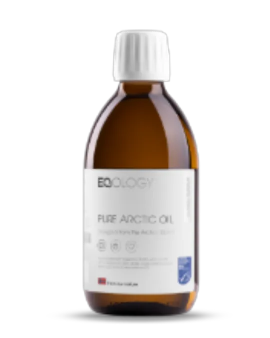

Savoir où vous en êtes, en cinq minutes.
Une goutte de sang prélevée chez vous, analysée par un laboratoire indépendant. Vous recevez votre équilibre entre oméga-6 et oméga-3, puis vous refaites le test quelques mois plus tard pour comparer.
Tout est dans l'enveloppe.
Le nécessaire pour prélever une goutte de sang, un buvard, une enveloppe retour et un mode d'emploi illustré. Aucun rendez-vous, aucun déplacement.

Quatre étapes, sans rendez-vous.
Tout se fait chez vous. Le kit contient le nécessaire et un mode d'emploi illustré.
01
Vous recevez le kit
Livré chez vous, avec un mode d'emploi illustré.
02
Vous prélevez une goutte
Une piqûre au bout du doigt, la goutte sèche sur un buvard.
03
Vous l'envoyez
Par la poste, à un laboratoire indépendant.
04
Vous lisez le résultat
En ligne, de façon anonyme, avec votre code personnel.
Un équilibre, pas une note.
L'alimentation actuelle apporte beaucoup d'oméga-6 et peu d'oméga-3. Le test indique le rapport entre les deux et la part d'oméga-3 dans vos cellules.
Ce n'est pas un diagnostic médical : c'est un repère pour savoir d'où vous partez.
Mesure 1
Le rapport oméga-6 / oméga-3
Combien d'oméga-6 pour un oméga-3 dans votre sang.
Mesure 2
L'indice oméga-3
La part d'EPA et de DHA dans les membranes de vos globules rouges.
Ensuite
Le second test
Les globules rouges se renouvellent en quatre mois environ : c'est le bon délai pour comparer.

Vous complétez, puis vous mesurez à nouveau.
Selon votre résultat, une huile chaque jour : Pure Arctic Oil, sa version Gold ou la version végane. Quelques mois plus tard, le second test montre ce qui a changé. Yves vous aide à lire le résultat et à choisir.
Ce qu'on nous demande.
Est-ce que ça fait mal ?
C'est une petite piqûre au bout du doigt, comme pour un test de glycémie. Le kit contient tout le nécessaire.
Qui analyse mon prélèvement ?
Un laboratoire indépendant. Vous consultez le résultat en ligne avec votre code personnel, de façon anonyme.
Quand refaire le test ?
Environ quatre mois plus tard, le temps que les globules rouges se renouvellent. Certains programmes Eqology incluent les deux tests.
Où commander le test ?
Depuis la fiche du test : le bouton vous mène à la boutique officielle Eqology, qui encaisse et livre.
Le test est un bon point de départ avec vos patients.
Une mesure objective avant de recommander, et une seconde pour suivre. Yves vous explique comment d'autres praticiens l'utilisent.